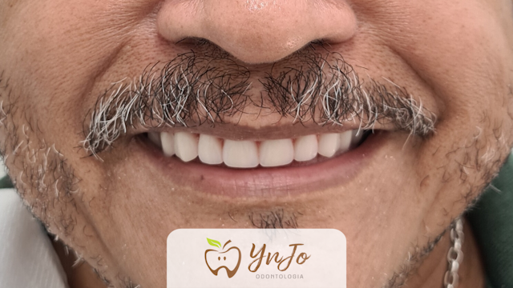
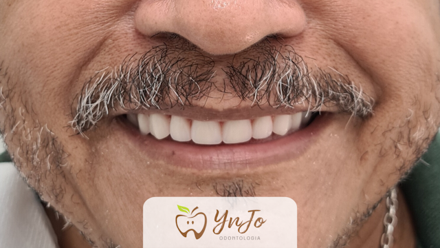

Trabalhamos com cuidado
Veja alguns dos exemplos de resultados que criamos no nosso consultório.
Veja alguns dos exemplos de resultados que criamos no nosso consultório.
 

Implantes dentários
É a solução para substituir um ou vários dentes que foram perdidos de maneira FIXA. Permitindo restituir as funções dos dentes naturais, melhorando a mastigação, a fonética e a estética. E o mais importante a AUTOESTIMA. Esse é o tratamento ideal para você que perdeu um, ou mais dentes, e até todos os dentes.
Harmonização Orofacial
É um conjunto de procedimento estéticos com objetivo tanto de prevenção, amenização, atenuação do envelhecimento e estética em todo o resto. Aqui na YnJo Odontologia, somos especialistas em:
Toxina Botulínica
É um dos principais procedimentos da Harmonização. Está neurotoxina é injetada por via muscular, inibindo a contração do musculo. Assim, não ocorrendo a liberação do neurotransmissor, o musculo não recebe a informação para contrair resultando na sua paralisação, evitando que se formem as rugas. Esse procedimento também, pode ser utilizado antes de marcar as rugas, assim, sendo usado também para prevenção.
Preenchedores com Ácido Hialurônico
O ácido hialurônico está presente na matriz dos nosso tecido, sendo responsável por manter vivo as fichas colágenas que dão a sustentação, hidratação e elasticidade para a nossa pele. Quando aplicados devolvem ao paciente o volume perdido e promovendo assim uma hidratação profunda da região. Pode ser usado para assimetria facial e preenchimento labial.
Prótese Dentaria
Existem vários tipos de próteses e apesar de cada tipo ser indicada para casos diferentes, o objetivo no fim é sempre o mesmo, que seria a reposição do dente natural. Aqui na YnJo Odontologia, disponibilizamos de todos os tipos, como por exemplo:
Prótese parcial removível
Que restitui um ou mais dentes perdidos em boca. Ela tem uma boa fixação em boca, e o paciente ainda tem a disponibilidade de retirar ela para realizar a higienização. Temos a disponibilidade de armação metálica e silicone que seria flexível.
Prótese total removível
É a famosa “dentadura”, ela substitui todos os dentes da boca, indicada para paciente que não tem nenhum dente na arcada superior ou na inferior, ou que venha ter a necessidade de perda desses dentes. Sua estrutura é feita, normalmente, por uma base de acrílico, que imita a mucosa e encaixa na gengiva. Trabalhamos com todo os tipos de dentes, sendo assim, você paciente junto aos nossos profissionais especializados, podem escolher o melhor tratamento que irá querer investir, mas sempre visando qualidade.
Próteses Fixa
A prótese fixa ela é apoiada sobre um dente preexistentes em boca. Seu objetivo é suprir a falta de alguns dentes perdidos sendo uma ponte fixa ou restituir um dente que foi muito fragilizado. Aqui na YnJo Odontologia, disponilizamos de todos os tipos como por exemplo:
Coroa total
Caso tenha perdido grande parte do dente, seja por fraturas ou até carie, é uma opção duradoura para restituir um dente que foi fraturado de forma parcial e completamente danificado. Pode ser feita de vários materiais, porcelana, resina, zircônia, metalo-ceramica, que cada uma tem uma indicação, você paciente junto aos nossos especialistas irá escolher qual a melhor para cada caso. Objetivando restaurar tanto a função mastigatória, quanto a estética do paciente.
Ponte Fixa
Ela utiliza dentes adjacentes dos dentes perdidos para poder repor os ausentes, usando os vizinhos como pilares. Uma ótima opção, quando possível para fugir das próteses removíveis.
Prótese sobre Implante
A prótese sobre implante é a queridinha dos pacientes. Pode substituir um dente, uma arcada e até a boca toda que são chamadas de Protocolos que podem ser feitas na parte superior e inferior, sempre de maneira fixa e confortável, que são feitas a partir dos Implantes Dentários.
Tratamento com hora marcada
Proporcionando para nós e o paciente uma melhor previsibilidade.

Ultrassom
Aparelho de Ultrassom e Jato de bicarbonato em limpezas dentais.
Radiografia
Aparelho de Radiografia Periapicais, para melhor diagnósticos e em casos de Urgências e Emergências.
Sala equipada
Sala equipada com Televisão estrategicamente posicionada para melhor conforto e experiencia do paciente.